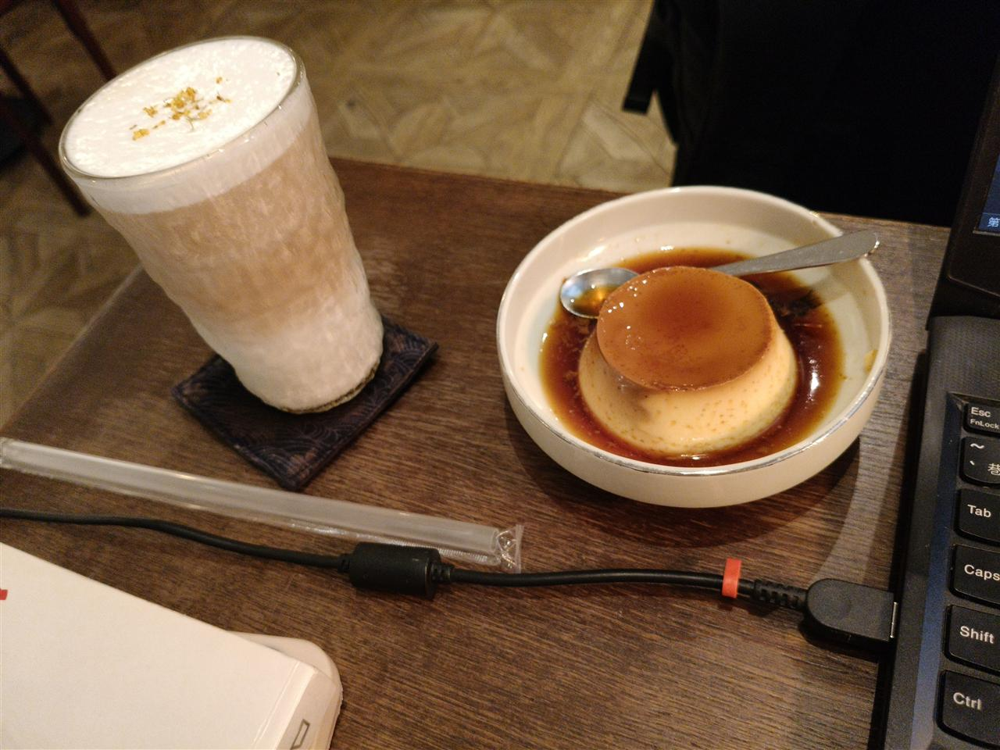

文學紀實與隨筆
這裡是我在科技與邏輯視角之外，用文字沉澱思緒的避風港。
收錄了日常的讀書心得、深度文本解析、生活軌跡觀察以及偶發的心情隨筆。在程式碼與理性思維的空隙中，我試圖透過閱讀與寫作來感受世界的溫度，探討存在、文學與人性的各種面向。每一篇隨筆，都是思維漫遊的真實紀錄。
這裡是我在科技與邏輯視角之外，用文字沉澱思緒的避風港。
收錄了日常的讀書心得、深度文本解析、生活軌跡觀察以及偶發的心情隨筆。在程式碼與理性思維的空隙中，我試圖透過閱讀與寫作來感受世界的溫度，探討存在、文學與人性的各種面向。每一篇隨筆，都是思維漫遊的真實紀錄。
來了兩個禮拜的入學紀錄。依山傍海的環境、獼猴與蛇的生態、港口公園的夜風與 Yorushika，以及初次長大的不真實感。
2025年11月23日 生活札記
2025年6月15日 生活札記
2026年1月14日 生活札記
對於人性現象的觀察與深度隨筆。
點擊圖片即前往對應篇章的閱讀筆記。
關於閱讀方法與層次的深度探討。

閱讀心得與省思。
針對近期時事之反思與隨筆。
一次充滿血腥味的夜半邂逅，以及蚊子們的死狀。
文字挑戰：在不提及題目本身的前提下，以少許句子勾勒出告白、分手、死亡、重逢四個題目的輪廓與氛圍。四首現代詩，以時間為主軸，記錄無聲的情感流動。
凌晨四點的失眠，一個衝動的念頭，和在超商門口意外邂逅的神秘姊姊。一個乖寶寶的第一次叛逆，以及那餘溫猶存的咖啡因味道。